BLEACH: THOUSAND-YEAR BLOOD WAR
Explore the characters, allies, and enemies who shape the final battle between the Soul Reapers and the Quincy.
PROTAGONISTS
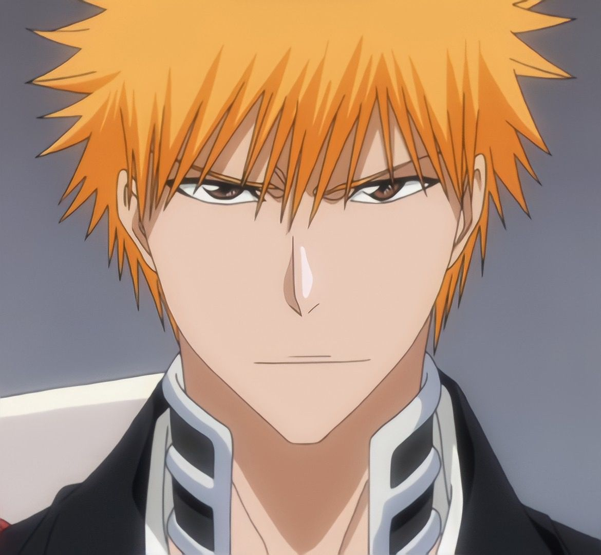
.jpg)
Ichigo Kurosaki
Human - Substitute Soul Reaper - Quincy - Hollow Hybrid
Ichigo Kurosaki is the main protagonist of Bleach and a teenager who gains the powers of a Soul Reaper. He is determined to protect his family, friends, and anyone in danger. Throughout the series, he discovers the truth about his complicated heritage and the different powers within him. During the Thousand-Year Blood War, he faces the challenges of understanding his identity while preparing to confront Yhwach.
Voice Actor: Masakazu Morita
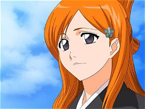
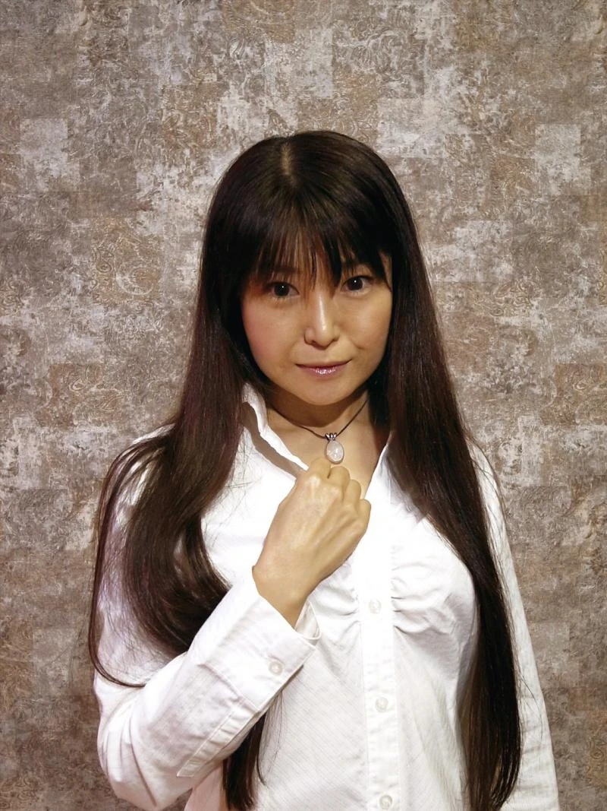
Orihime Inoue
Human - Shun Shun Rikka
Orihime Inoue is one of Ichigo's closest friends and a kind-hearted person who values the lives of others. Her spiritual abilities allow her to reject events through the powers of the Shun Shun Rikka. Although she prefers peaceful solutions, she is willing to stand her ground when protecting the people she cares about. During the Thousand-Year Blood War, her healing and defensive abilities become important in supporting her allies.
Voice Actor: Yuki Matsuoka
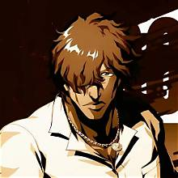
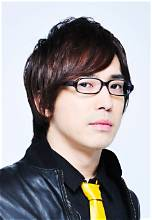
Yasutora Sado (Chad)
Human - Fullbringer
Yasutora Sado, commonly known as Chad, is one of Ichigo's closest friends. Despite his intimidating appearance, he is gentle, respectful, and strongly protective of others. His Fullbring abilities allow him to manifest powerful armor around his arms. He fights alongside Ichigo and their friends whenever their loved ones or the Soul Society are threatened.
Voice Actor: Hiroki Yasumoto
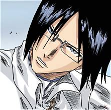
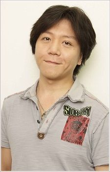
Uryu Ishida
Quincy - Wandenreich - Sternritter A (The Antithesis)
Uryu Ishida is a skilled Quincy who initially considers Soul Reapers his enemies because of the conflict between their groups. He is intelligent, analytical, and highly skilled with a bow and spiritual techniques. Despite his reserved personality, he deeply cares about his friends and often puts himself in danger to help them. During the Thousand-Year Blood War, his unexpected decision to join the Wandenreich creates tension between him and Ichigo.
Voice Actor: Noriaki Sugiyama
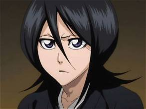
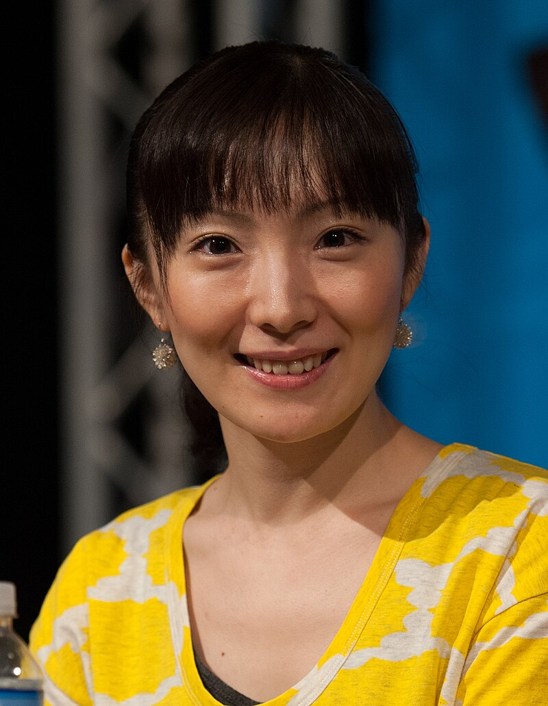
Rukia Kuchiki
Soul Reaper - Gotei 13 - 13th Division Lieutenant
Rukia Kuchiki is a Soul Reaper who first introduces Ichigo to the world of Soul Reapers and Hollows. She is disciplined, determined, and compassionate, although she sometimes hides her emotions behind a serious attitude. Her Zanpakuto, Sode no Shirayuki, possesses powerful ice-based abilities. Throughout the war, Rukia demonstrates her growth as a fighter and her determination to protect her friends and fellow Soul Reapers.
Voice Actor: Fumiko Orikasa
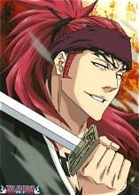
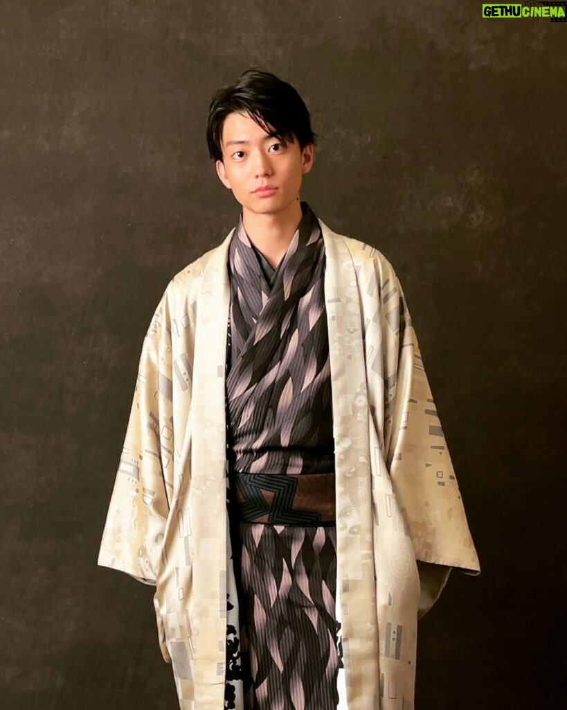
Renji Abarai
Soul Reaper - Gotei 13 - 6th Division Lieutenant
Renji Abarai is the lieutenant of the 6th Division and a childhood friend of Rukia Kuchiki. He is energetic, stubborn, and highly determined to become stronger. His Zanpakuto, Zabimaru, takes the form of a segmented blade with powerful long-range attacks. During the Thousand-Year Blood War, Renji undergoes further training to unlock his true Bankai and improve his abilities.
Voice Actor: Kentarou Itou

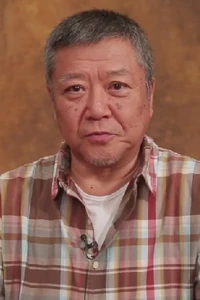
Ichibe Hyosube
Soul Reaper - Squad Zero - Commander
Ichibe Hyosube is the leader of Squad Zero, also known as the Royal Guard. He is responsible for naming the important objects and concepts within the Soul Society. His Zanpakuto, Ichimonji, allows him to manipulate names and the powers associated with them. As one of the strongest Soul Reapers, he plays a major role in defending the Soul King Palace against the Wandenreich.
Voice Actor: Naomi Kusumi
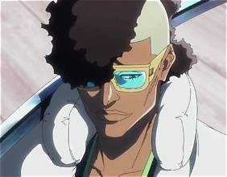
Oetsu Nimaiya
Soul Reaper - Squad Zero - Blade God
Oetsu Nimaiya is a member of Squad Zero and the creator of the Zanpakuto. He is known for his energetic personality and exceptional sword-making skills. His knowledge of Zanpakuto makes him an important figure in the history of Soul Reapers. During the war, he demonstrates his extraordinary swordsmanship against the invading Quincy forces.
Voice Actor: Yoji Ueda
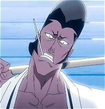
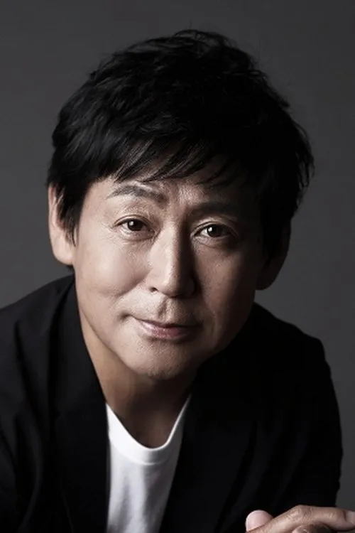
Tenjiro Kirinji
Soul Reaper - Squad Zero - Divine General of the East
Tenjiro Kirinji is a member of Squad Zero who specializes in healing techniques. He is known for his extraordinary speed and his ability to use special hot springs for recovery. His personality is loud and confident, but he takes his responsibilities as a member of the Royal Guard seriously. He assists in preparing the Soul Reapers for the challenges of the Thousand-Year Blood War.
Voice Actor: Tomoyuki Shimura
Kirio Hikifune
Soul Reaper - Squad Zero - Ruler of Grain
Kirio Hikifune is a member of Squad Zero who specializes in creating food infused with spiritual energy. She previously served as the captain of the 12th Division before joining the Royal Guard. Her abilities allow her to strengthen and restore the spiritual energy of others through her cooking. She plays an important role in helping the Soul Reapers recover and prepare for battle.
Voice Actor: Ayumi Tsunematsu
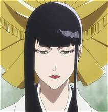
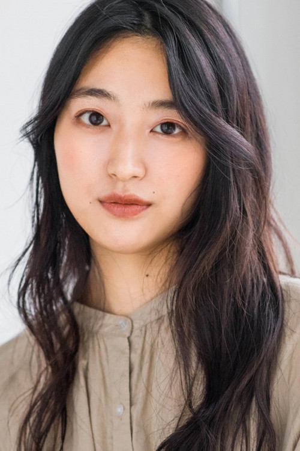
Senjumaru Shutara
Soul Reaper - Squad Zero - Great Weaver
Senjumaru Shutara is a member of Squad Zero known for her exceptional weaving abilities. She creates special garments that can provide protection and conceal powerful spiritual properties. Her calm and elegant personality hides her dangerous combat skills. During the invasion of the Soul King Palace, she uses her abilities to challenge the members of the Schutzstaffel.
Voice Actor: Rina Sato
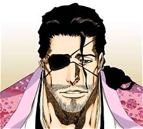
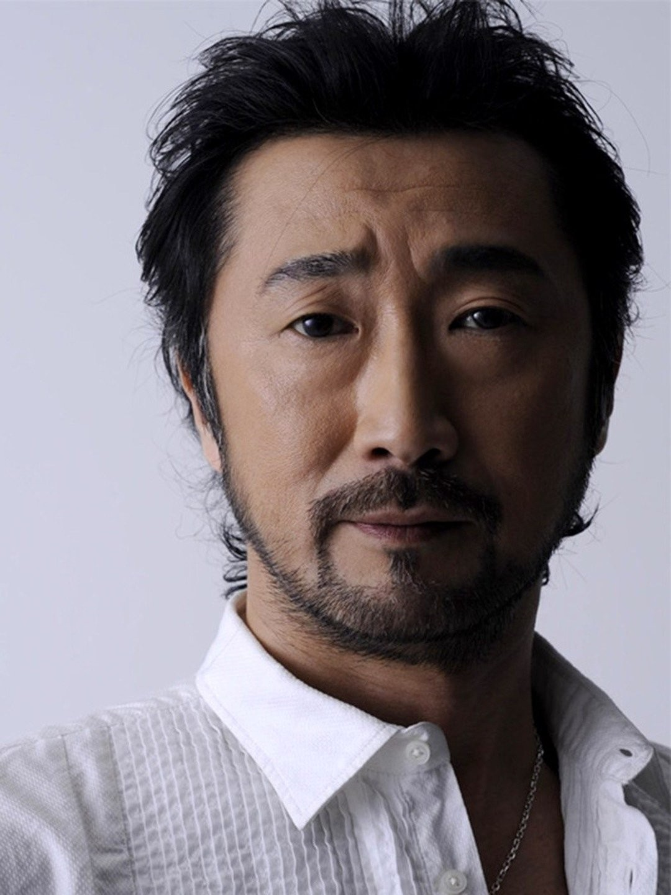
Shunsui Kyoraku
Soul Reaper - Gotei 13 - 1st Division Captain / Head Captain
Shunsui Kyoraku is a powerful Soul Reaper known for his relaxed attitude and distinctive appearance. Despite his carefree personality, he is an experienced strategist who understands the difficult decisions required during wartime. His Zanpakuto allows him to turn children's games into deadly battles. Following the death of the previous Head Captain, Shunsui assumes leadership of the Gotei 13 during one of its most difficult periods.
Voice Actor: Akio Otsuka
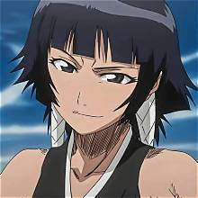
Soi Fon
Soul Reaper - Gotei 13 - 2nd Division Captain
Soi Fon is the captain of the 2nd Division and the commander of the Stealth Force. She is strict, disciplined, and highly devoted to her responsibilities. Her fighting style focuses on speed, precision, and assassination techniques. Despite her serious personality, she has a complicated history with Yoruichi Shihoin, whom she once deeply admired.
Voice Actor: Houko Kuwashima
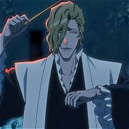
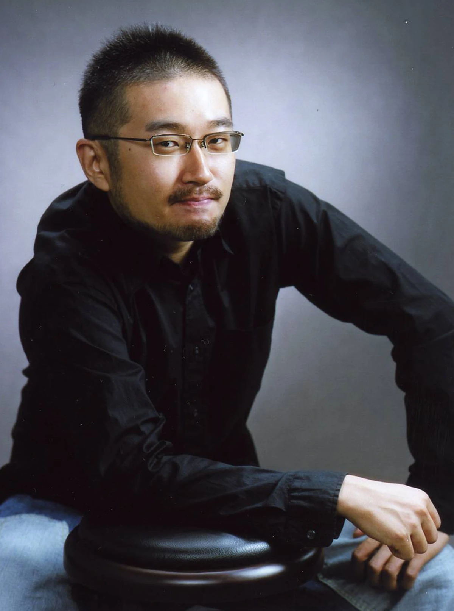
Rojuro Otoribashi
Soul Reaper - Gotei 13 - 3rd Division Captain
Rojuro Otoribashi, also known as Rose, is the captain of the 3rd Division and a former member of the Visored. He has a refined personality and a strong appreciation for music and art. His Zanpakuto allows him to create powerful illusions through sound. Although he appears elegant and composed, he is a capable fighter who takes his duties as a captain seriously.
Voice Actor: Shouto Kashii
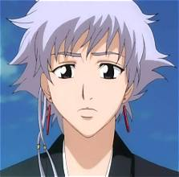
Isane Kotetsu
Soul Reaper - Gotei 13 - 4th Division Lieutenant
Isane Kotetsu is the lieutenant of the 4th Division and a dedicated medical Soul Reaper. She is gentle, responsible, and committed to helping injured members of the Gotei 13. Although she can be shy and easily startled, she remains dependable during difficult situations. Her medical knowledge and healing abilities make her an important part of the Soul Society's support forces.
Voice Actor: Yukana Nogami
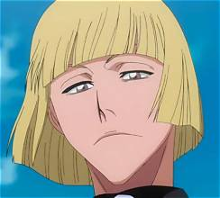
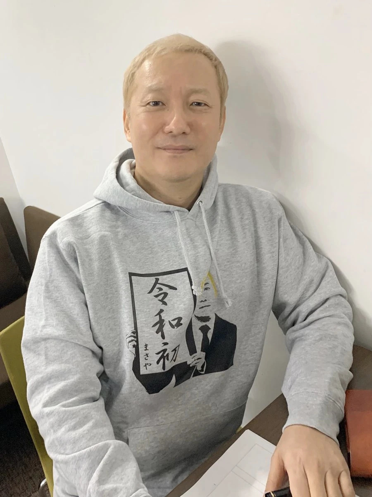
Shinji Hirako
Soul Reaper - Gotei 13 - 5th Division Captain
Shinji Hirako is the captain of the 5th Division and a former member of the Visored. He is known for his playful personality, unusual sense of humor, and ability to remain calm in dangerous situations. His Zanpakuto, Sakanade, reverses the senses and direction of his opponents. He uses his experience and unique abilities to assist the Soul Society during the war against the Quincy.
Voice Actor: Masaya Onosaka
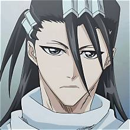
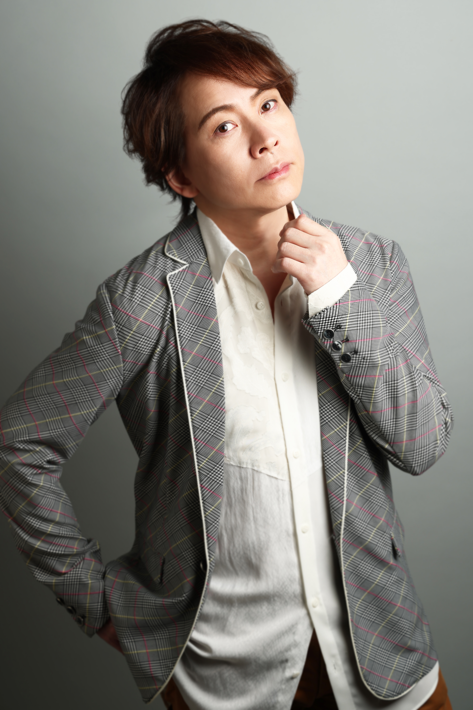
Byakuya Kuchiki
Soul Reaper - Gotei 13 - 6th Division Captain
Byakuya Kuchiki is the captain of the 6th Division and the head of the noble Kuchiki family. He is composed, disciplined, and strongly believes in maintaining the laws of the Soul Society. His Zanpakuto, Senbonzakura, releases countless blade-like fragments that resemble cherry blossom petals. During the Thousand-Year Blood War, he faces a devastating defeat that forces him to reconsider the importance of relying on others.
Voice Actor: Ryotaro Okiayu
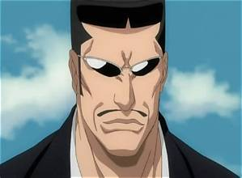
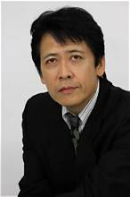
Tetsuzaemon Iba
Soul Reaper - Gotei 13 - 7th Division Lieutenant
Tetsuzaemon Iba is a member of the 7th Division who is known for his serious attitude and strong sense of duty. He is a dependable Soul Reaper who respects the responsibilities that come with serving the Gotei 13. Although he is not always in the spotlight, he remains committed to supporting his fellow Soul Reapers. His loyalty and determination make him a reliable member of the organization.
Voice Actor: Rintaro Nishi
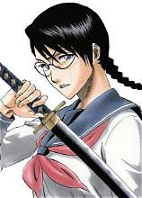
Lisa Yadomaru
Soul Reaper - Former 8th Division Lieutenant - Visored
Lisa Yadomaru is a former lieutenant of the 8th Division and a member of the Visored. She is intelligent, composed, and often displays a serious attitude during battles. Her Hollow powers provide her with additional strength and combat abilities. Despite her reserved nature, she remains loyal to her allies and contributes to the fight against the Wandenreich.
Voice Actor: Sayori Ishizuka
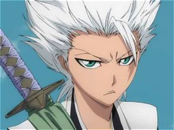
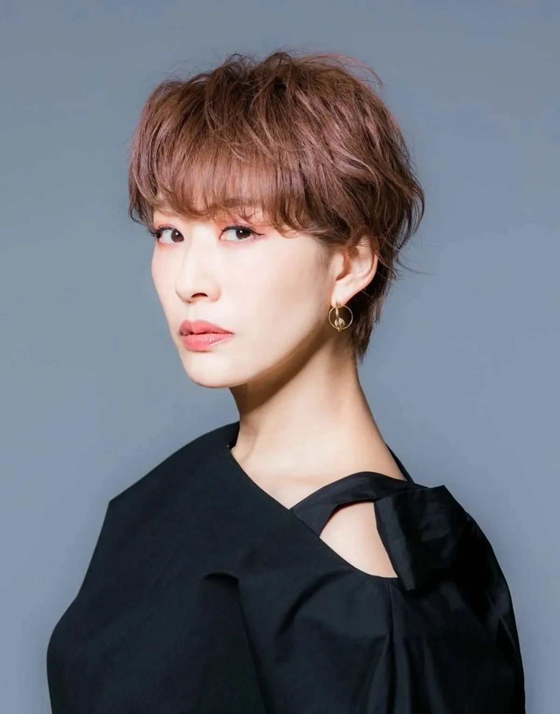
Toshiro Hitsugaya
Soul Reaper - Gotei 13 - 10th Division Captain
Toshiro Hitsugaya is the young captain of the 10th Division and one of the most talented Soul Reapers of his generation. He is serious, intelligent, and responsible despite his young appearance. His Zanpakuto, Hyorinmaru, gives him powerful ice-based abilities. During the Thousand-Year Blood War, he faces dangerous opponents and demonstrates the full potential of his Bankai.
Voice Actor: Romi Park

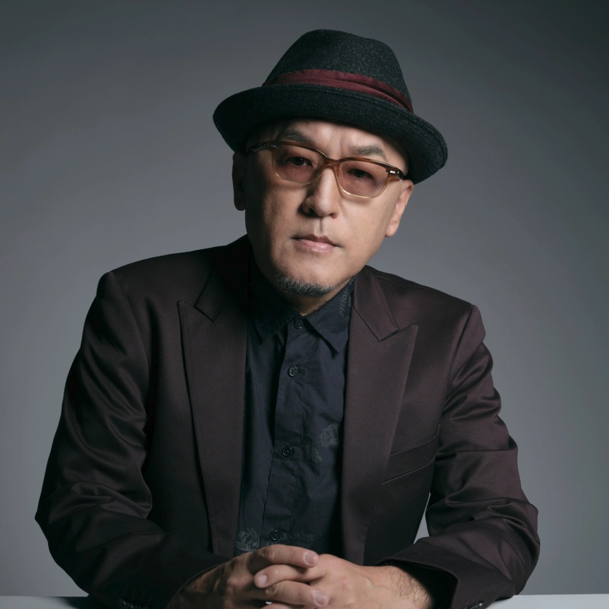
Kenpachi Zaraki
Soul Reaper - Gotei 13 - 11th Division Captain
Kenpachi Zaraki is the captain of the 11th Division and a Soul Reaper who enjoys challenging battles. He relies heavily on his immense physical strength, endurance, and natural fighting instincts. Despite his violent reputation, he has a strong sense of loyalty toward his division. During the war, he discovers more about his Zanpakuto and gradually unlocks abilities he had previously suppressed.
Voice Actor: Fumihiko Tachiki
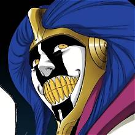
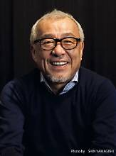
Mayuri Kurotsuchi
Soul Reaper - Gotei 13 - 12th Division Captain
Mayuri Kurotsuchi is the captain of the 12th Division and the head of the Soul Society's research and development department. He is highly intelligent, unpredictable, and willing to use unusual scientific methods to achieve his goals. His knowledge of biology, technology, and spiritual experimentation makes him a dangerous opponent. During the war, he uses his inventions and strategies to counter the abilities of the Quincy.
Voice Actor: Ryusei Nakao
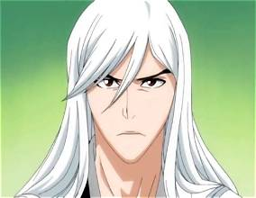
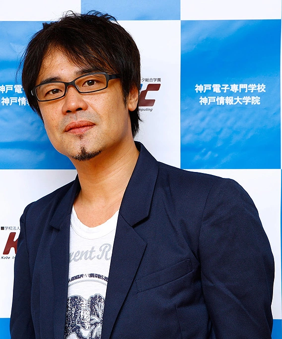
Jushiro Ukitake
Soul Reaper - Gotei 13 - 13th Division Captain
Jushiro Ukitake is the captain of the 13th Division and one of the most respected Soul Reapers in the Gotei 13. He is kind, thoughtful, and deeply concerned about the well-being of others. Although his health often limits his physical abilities, he remains a capable and experienced fighter. His connection to the Soul King becomes especially important during the events of the Thousand-Year Blood War.
Voice Actor: Hideo Ishikawa

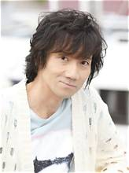
Kisuke Urahara
Soul Reaper - Former 12th Division Captain
Kisuke Urahara is the owner of the Urahara Shop and a former captain of the 12th Division. He is a brilliant inventor and strategist who often hides his intelligence behind a relaxed and playful personality. His inventions and knowledge of Soul Reaper abilities make him an important ally to Ichigo and his friends. During the Thousand-Year Blood War, he contributes through his scientific knowledge and creative battle strategies.
Voice Actor: Shinichiro Miki
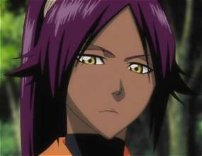
Yoruichi Shihoin
Soul Reaper - Former 2nd Division Captain - Former Stealth Force Commander
Yoruichi Shihoin is a former captain of the 2nd Division and commander of the Stealth Force. She is known for her exceptional speed, hand-to-hand combat skills, and mastery of Shunko. Her playful and confident personality often contrasts with her impressive fighting abilities. She is also a close ally of Kisuke Urahara and plays an important role in supporting Ichigo and the Soul Society during the war.
Voice Actor: Satsuki Yukino
ANTAGONISTS

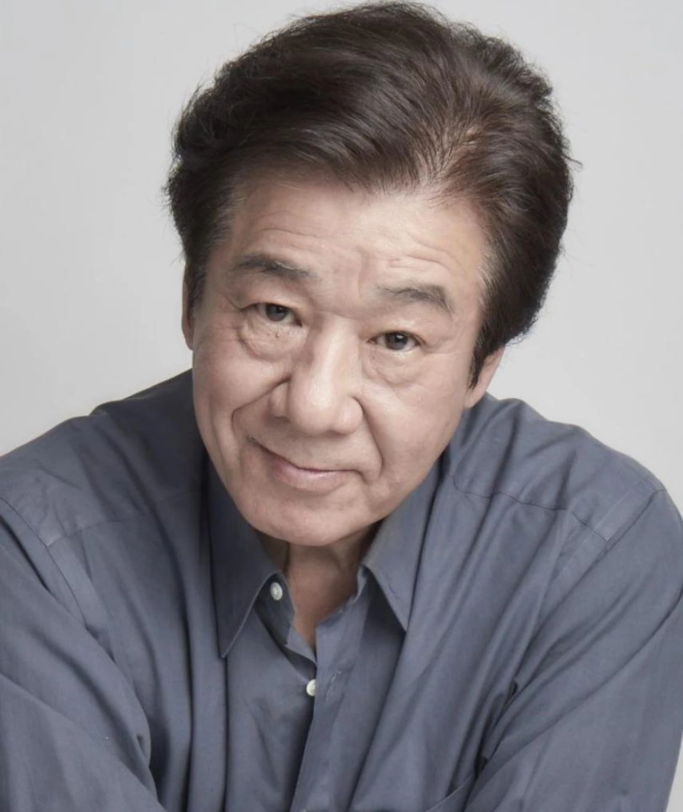
Yhwach
Quincy - Wandenreich - Emperor - Schrift A (The Almighty)
Yhwach is the emperor of the Wandenreich and the primary antagonist of the Thousand-Year Blood War. Known as the Father of the Quincy, he possesses the Almighty, an extraordinary ability that allows him to perceive and alter the future. His goal is to reshape the worlds according to his vision, even if it means destroying the existing order.
Voice Actor: Takayuki Sugo
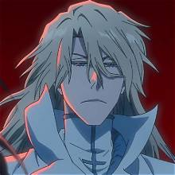
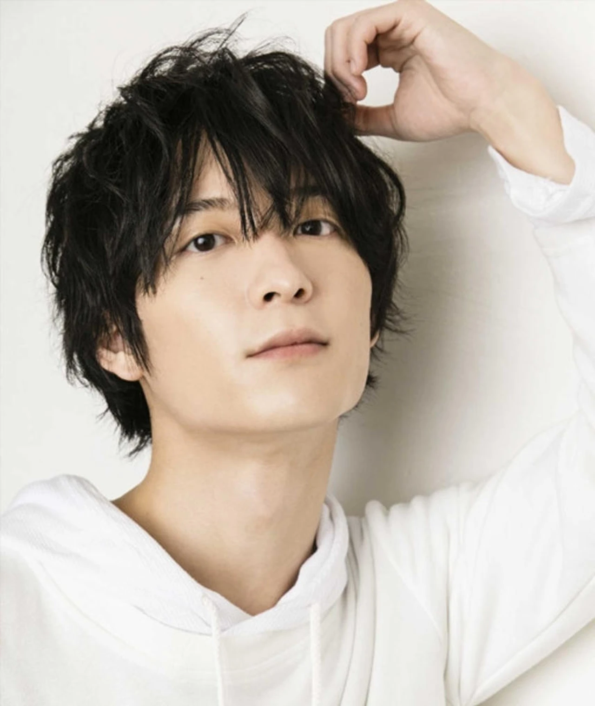
Jugram Haschwalth
Quincy - Wandenreich - Sternritter Grandmaster - Schrift B (The Balance)
Jugram Haschwalth is Yhwach's right-hand man and the Grandmaster of the Sternritter. He possesses The Balance, an ability that distributes misfortune and fortune between himself and his opponents. Calm and composed, he is deeply loyal to Yhwach and plays a major role in carrying out the emperor's plans.
Voice Actor: Yuuichirou Umehara
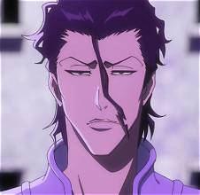
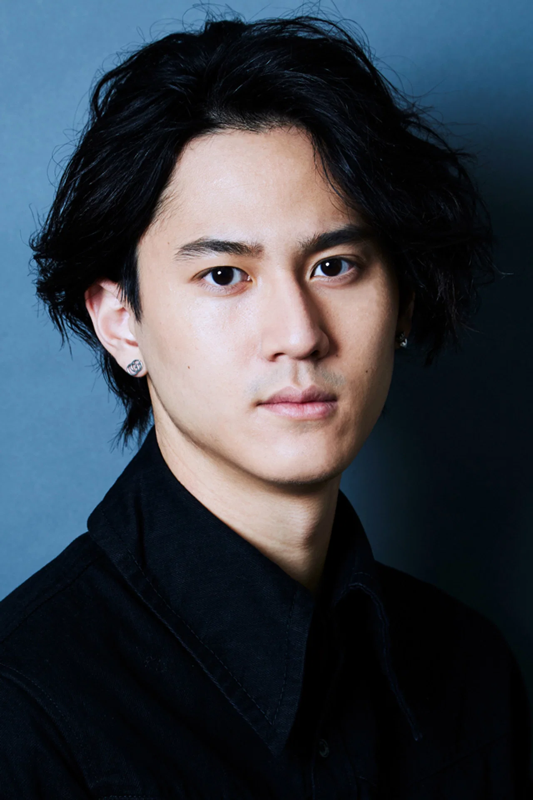
Askin Nakk Le Vaar
Quincy - Wandenreich - Schutzstaffel - Schrift D (The Deathdealing)
Askin Nakk Le Vaar is a member of the Schutzstaffel, Yhwach's elite group of powerful Quincy soldiers. His ability, The Deathdealing, allows him to manipulate the lethal dose of substances affecting his opponents. Despite his casual and laid-back attitude, he is a highly dangerous fighter who uses intelligence and strategy to gain an advantage in battle.
Voice Actor: Shunsuke Takeuchi
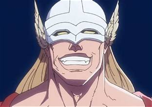
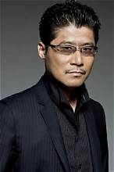
Gerard Valkyrie
Quincy - Wandenreich - Schutzstaffel - Schrift M (The Miracle)
Gerard Valkyrie is a member of the Schutzstaffel and one of Yhwach's most powerful soldiers. His Schrift, The Miracle, allows him to turn seemingly impossible situations into extraordinary advantages. With immense strength and endurance, he becomes a major threat to the Soul Reapers during the war.
Voice Actor: Tsuyoshi Koyama
MISCELLANEOUS CHARACTERS
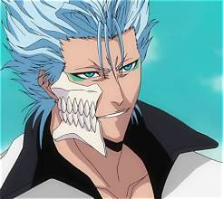
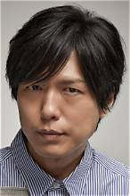
Grimmjow Jaegerjaquez
Arrancar - Former Espada 6
Grimmjow is a powerful Arrancar with a fierce personality and an intense desire for battle. Although he is not aligned with the Soul Reapers, he becomes an important ally against their common enemies.
Voice Actor: Junichi Suwabe
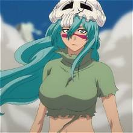
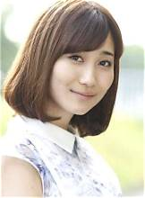
Nelliel Tu Odelschwanck
Arrancar - Former Espada 3
Nelliel is a kind-hearted Arrancar who values fairness and dislikes unnecessary violence. Despite her gentle personality, she possesses great strength and is willing to fight to protect those she cares about.
Voice Actor: Arisa Kiyoto
Tier Harribel
Arrancar - Former Espada 3 - Ruler of Hueco Mundo
Tier Harribel is a powerful Arrancar known for her calm personality and strong sense of loyalty. She values protecting her companions and maintaining peace among the Arrancar.
Voice Actor: Megumi Toyoguchi

Sosuke Aizen
Soul Reaper - Former 5th Division Captain - King of Hueco Mundo
Sosuke Aizen is a highly intelligent and manipulative former Soul Reaper captain who seeks to surpass the limits of a Soul Reaper. With his extraordinary spiritual power and Zanpakuto, Kyoka Suigetsu, he remains a dangerous and influential figure even while imprisoned in Muken.
Voice Actor: Shinichiro Miki